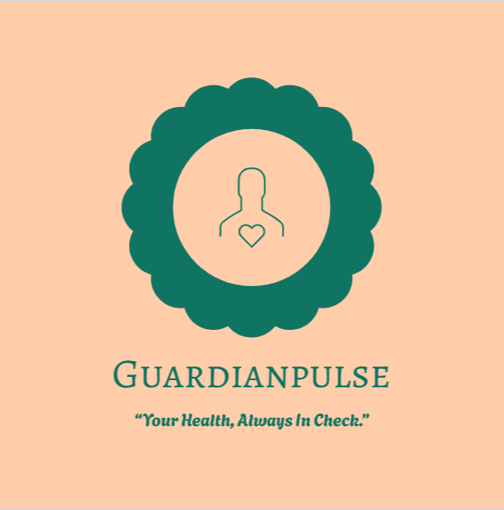
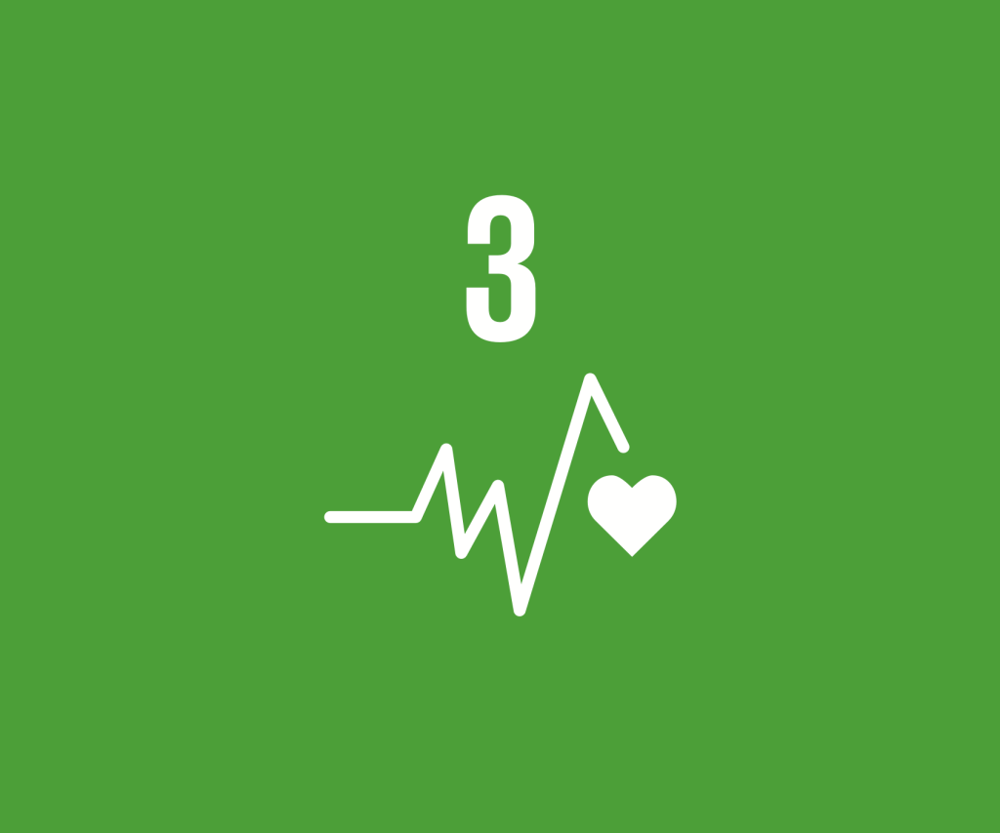

Welcome to GuardianPulse
Our project focuses on helping elderly people by monitoring their health and providing emergency alerts using a smartwatch and mobile app.
Explore the sections below to learn about the problem, our solution, its relevance to SDG 3, and how we plan to bring this idea to the market.

The Problem: A Growing Need for Care
As the global population ages, the need for effective and accessible care for the elderly becomes more critical. Many seniors live independently, which can put them at risk of falls, medical emergencies, or other unforeseen incidents without immediate assistance. The GuardianPulse system addresses this by providing a reliable and non-intrusive way to ensure their safety and well-being, offering peace of mind to both them and their families.
The GuardianPulse System
Smartwatch
- Monitors heart rate, oxygen level, and movement
- Fall detection with automatic alert system
- Emergency SOS button for manual alerts
Mobile App
- Live health data dashboard for caregivers
- Instant emergency notifications to family/caregivers
- Routines & medication reminders
- Location tracking
Go-to-Market Strategy
- Dubai Pilot Launch – Target affluent families in Dubai and Sharjah through healthcare partnerships and community outreach programs.
- Healthcare Partnerships – Collaborate with Dubai Health Authority, private clinics, and geriatricians for credibility and distribution.
- Digital Marketing – Social media campaigns targeting adult children of elderly parents, emphasizing peace of mind and safety.
- Community Programs – Partner with senior centers, community clubs, and cultural organizations for awareness and demonstrations.
Key Success Factor: Word-of-mouth referrals from satisfied families supported by testimonials and case studies.
Alignment with UN Sustainable Development Goals (SDG)
SDG 3: Good Health and Well-being
GuardianPulse directly contributes to SDG 3 by providing a technological solution to enhance the health and well-being of the elderly. Our system aims to reduce preventable injuries and deaths, ensuring a healthier life for a vulnerable population segment.

Key Statistics About the Elderly
Understanding the scale of the challenge is crucial. Here are some key statistics that highlight the importance of GuardianPulse:
- By 2050, 1 in 6 people in the world will be over age 65 (UN Data).
- Falls are the leading cause of injury and death among older adults.
- In the UAE, life expectancy has risen to 78 years, increasing elderly care needs.
We’d Love Your Feedback!
Please share your thoughts using the form below to help us improve GuardianPulse.
Click here to give feedback